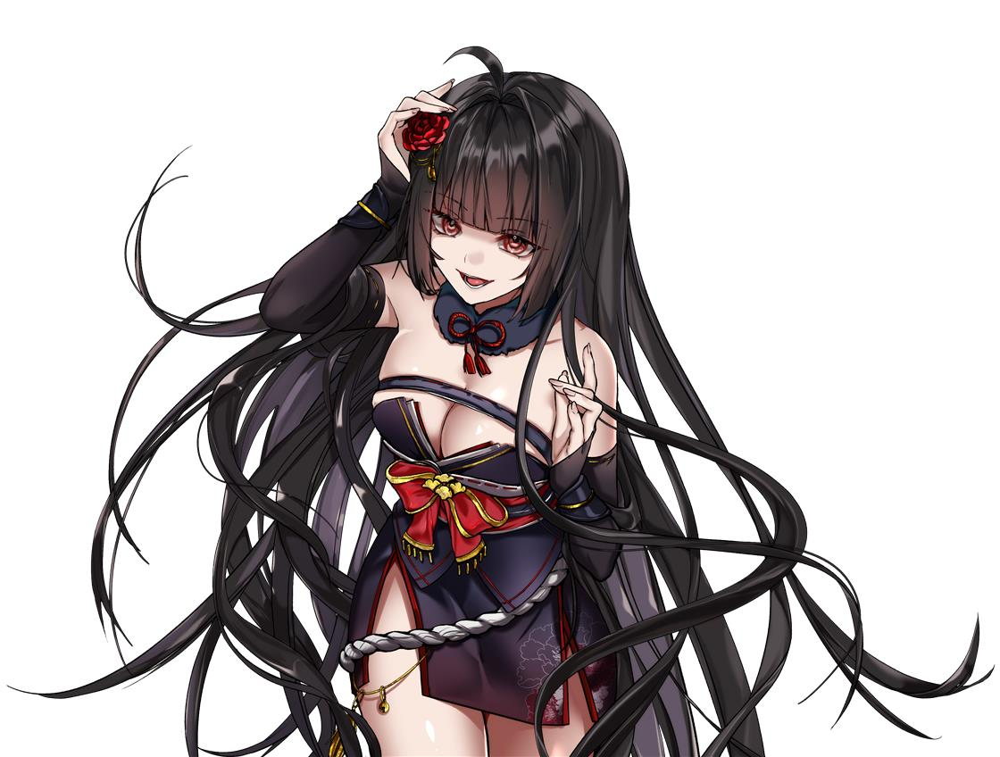
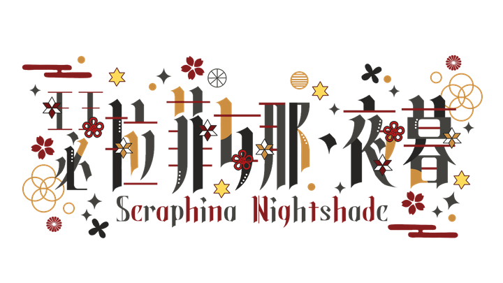

台灣個人勢 VTuber ✦ 2025.09.01 出道
瑟拉菲娜
Seraphina Nightshade
嗨，我是瑟拉菲娜，也可以叫我菲娜。平常在 Twitch 玩 RPG、和朋友聯動，偶爾唱唱歌、聊聊天。第一次來也歡迎，找個舒服的位置，一起玩吧！

01 / ABOUT
關於菲娜
遊戲之外，我也喜歡看動畫、聽音樂、下廚和做手作。直播想把玩遊戲的樂趣和偶爾冒出來的歌聲分享給大家。

02 / CHANNELS
台灣個人勢 VTuber ✦ 2025.09.01 出道
Seraphina Nightshade
嗨，我是瑟拉菲娜，也可以叫我菲娜。平常在 Twitch 玩 RPG、和朋友聯動，偶爾唱唱歌、聊聊天。第一次來也歡迎，找個舒服的位置，一起玩吧！

01 / ABOUT
遊戲之外，我也喜歡看動畫、聽音樂、下廚和做手作。直播想把玩遊戲的樂趣和偶爾冒出來的歌聲分享給大家。

02 / CHANNELS